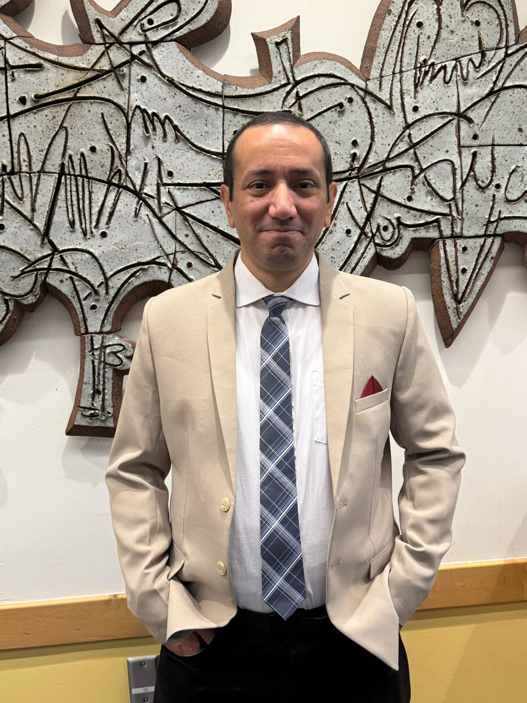

Noomen Belmechri
Physics Researcher and Front-End Developer
I’m a physicist transitioning into front-end development, combining scientific thinking with creative design. I enjoy solving problems and building interfaces that are both functional and visually appealing. My experience in academia has shaped my attention to detail and structured approach. I’m excited to keep learning and creating on the web.
